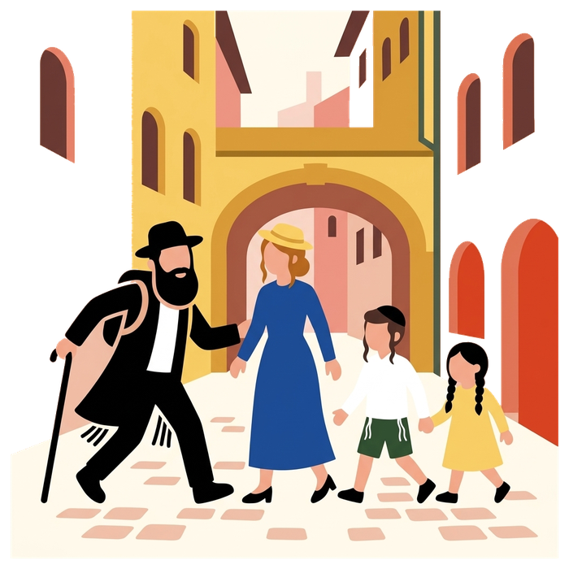

Home / Jewish Lyon guide / Jewish Lyon in two days
Jewish Lyon in two days
an itinerary built around kosher meals and Shabbat
Two days cover Jewish Lyon: day one is a 2 h 30 walk through rue Juiverie, inside the Grande Synagogue and along rue Sainte-Catherine; day two is one Memory visit, the CHRD or Montluc, never both. Kosher meals are in Villeurbanne and the 6th arrondissement. Two full days are enough to see the Jewish Lyon that matters: the medieval quarter and the Grande Synagogue, then the places of memory of the war years. Here is how we would lay them out, with where to eat and when to stop for Shabbat.
- 2 days, 1 guide
- Kosher meals planned
- Sunday to Friday
- Alps-bound families welcome

Before you plan
- Start on a Sunday or a Monday. Everything kosher closes Friday afternoon, and we do not run tours on Shabbat. Two days starting Sunday morning leave Friday free for travel or rest.
- Sleep near the Presqu'île or in the 6th. Both are a short walk or metro ride from the synagogues and from most kosher restaurants. See where to stay.
- Book the Grande Synagogue early. Entry depends on the day's opening hours and security clearance; we confirm it with the booking. It is the one thing in Lyon you cannot see on your own.
Day 1 Jewish Lyon, from the Middle Ages to today
Morning, 2h30 on foot. Vieux Lyon and rue Juiverie, the street of the medieval Jewish quarter, then across the river to the Grande Synagogue on quai Tilsitt, built in 1864, where we go inside. We finish on rue Sainte-Catherine, where the UGIF office was raided in February 1943. This is our Jewish Lyon tour.
Lunch. The nearest certified kosher places are in the 2nd and the 6th; we tell you which ones are open that day. Full list on Kosher in Lyon.
Afternoon, on your own. The traboules of Vieux Lyon, the Presqu'île shops, or the Parc de la Tête d'Or with children. If you want a second guided stretch, ask us for the history walk of the 19th-century community in the 2nd arrondissement.
Evening. Dinner in Villeurbanne, where most of the meat restaurants are, 15 minutes by metro from Bellecour. Evening prayers at the Grande Synagogue or at a Chabad house, see synagogues and prayer times.
Day 2 Memory
Choose one of the two Memory visits. We never do both on the same day: each needs its time, and the second one would be lost.
- Option A, the CHRD. The Centre d'histoire de la résistance et de la déportation, in the former Gestapo headquarters of Klaus Barbie, with the Jewish story of the occupation at the centre: the raids, the deportations, Izieu. About 2h30. Memory: CHRD.
- Option B, Montluc and Neveh Shalom. The prison where Jean Moulin and the children of Izieu were held, then the synagogue Neveh Shalom and the Jewish cultural institute next door: the dead and the living in one walk. About 2h30. Memory: Montluc.
Afternoon. Lunch in the 6th, then the Jewish cemetery of La Mouche if you have family to look for, or a quiet end of day at the Parc de la Tête d'Or.
If you have a third day
Give it to Izieu. The memorial to the 44 children deported in April 1944 is an hour from Lyon by road; we spend the full day there with a van and driver you book separately. From 990 € for the group, quote on request: the Izieu day.
Driving on to the Alps the same evening? Izieu sits on the way to Chambéry. Ask us how to combine the two.
Only passing through?
Families landing at Lyon Saint-Exupéry and driving to the ski resorts take the Stopover: three hours in the city, the Grande Synagogue included, a kosher lunch, and you are on the motorway by mid-afternoon. See Lyon, the gateway to the Alps.
Questions we get
Can we do both Memory visits in two days?
Yes, on separate days: day two and day three. We do not combine the CHRD and Montluc on the same day, there is too much to see and to feel.
Is the itinerary suitable for children?
Day one, yes, from about eight years old. The Memory visits suit teenagers; we adapt what we say. Izieu, from about ten, and we talk it through with you first.
Can you arrange the kosher meals?
We tell you where to eat and which caterers deliver to hotels, and we help you order. You book and pay the restaurant or caterer directly.
What if we arrive on a Friday?
Rest, pray and eat well: see Shabbat in Lyon. Start the itinerary on Sunday morning.